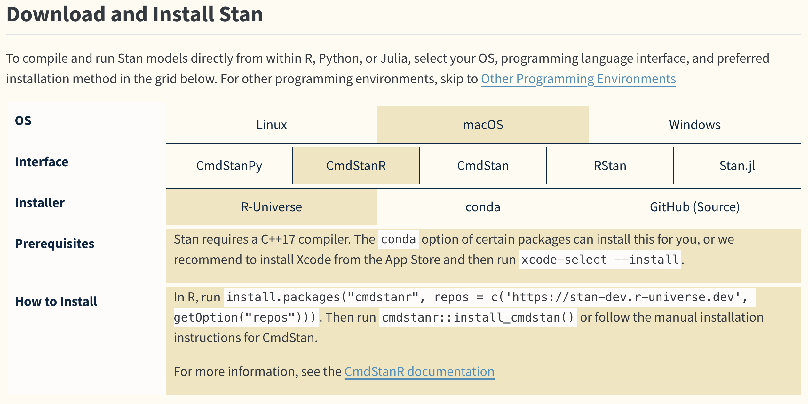
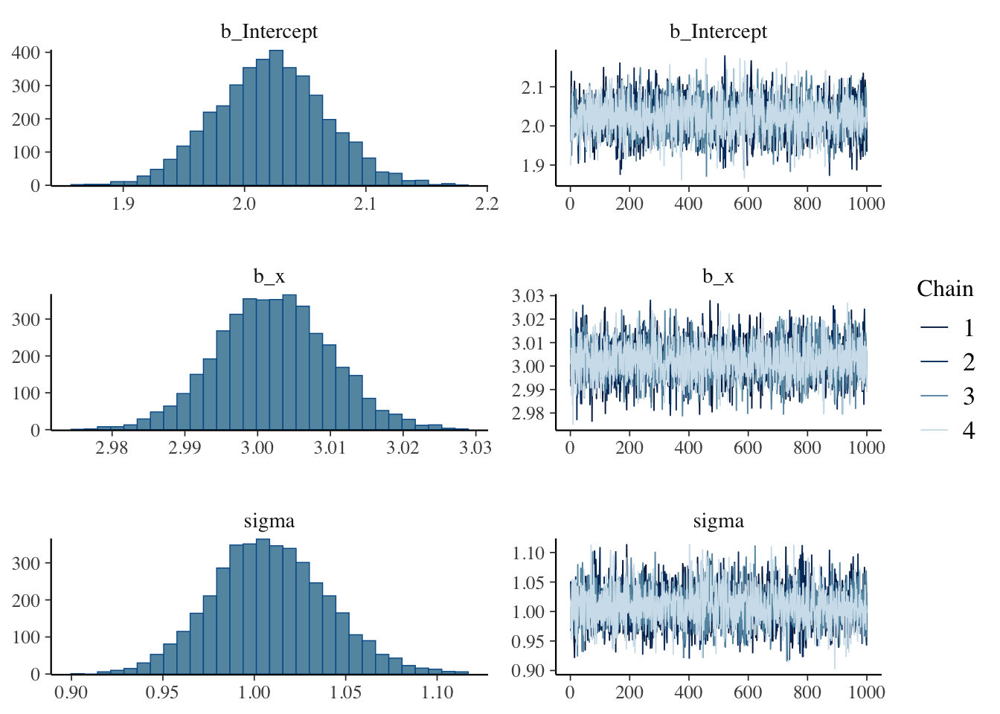
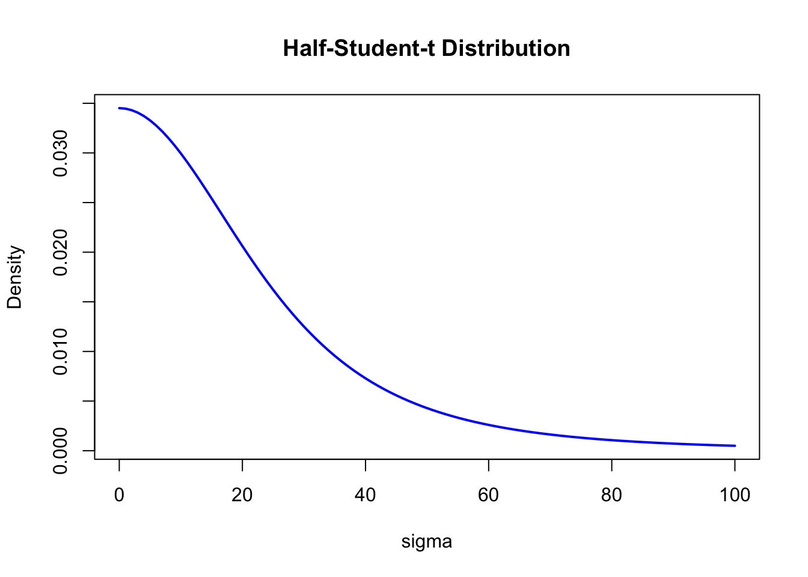

Code
install.packages("brms")ここまで心理統計の基本的な話題をRで実践しながら見てきたが，ここでベイズ統計の話題を導入しよう。 わざわざこのように断る理由は，ベイズ統計学が推測統計学の枠組みの一種であるにもかかわらず，その歴史や解釈によって様々な誤解が生じているからである。一説にはベイズ統計学には100を超える派閥・解釈のスタイルがあるとも言われており，迂闊に議論をすることが憚られるような言説が交わされることも少なくない。
筆者はファッションベイジアンを自認しており，主義主張を戦わせることはあまり好ましいことではないと考えている。そのような調子の良い立場の人間が語ることである，という事前情報を十分理解した上で，以下の解説を読んでほしい。
ベイズ統計学の生まれは古く，ベイズの定理にまで遡れば実に300年近く前になる。ベイズの定理を見出したとされるトーマス・ベイズは，18世紀の牧師であり，1763年に死んでいる。その古い人物の名を冠した定理が，現在は「ベイズ統計学」と学問全体を覆うほどになっているのは，それがこれまで紹介してきた統計モデルと考え方や解釈の仕方を大幅に変えているからである。
また，ベイズ統計学はその長い歴史に対して，応用的な価値が見出されたのが比較的最近である。筆者の感覚で言えば，2010年以降になって，ベイズ統計学の応用が急速に広まったように思う。古くから知られていた理論が長らくその名をひそめていたのは，ベイズ統計学を応用できるシーンが限定的であったこと，その研究が軍事的な機密を含むことで公開されることが少なかったこと，そして冗談のように聞こえるかもしれないが，アメリカ統計学会の重鎮がベイズ統計学を嫌っていたこと，がその理由と考えられる。このあたりの事情については(シャロン・バーチュ・マグレイン [2011] 2018)を参考にしてほしい。
そして近年になって改めてベイズ統計学が注目されるようになったのには，2つの理由がある。第一は社会心理学における再現性の危機に対する対応として，従来の統計学ではない新しいアプローチとして期待されたこと。第二は計算機科学の発展により，非常にパワフルな推定方法が開発され，統計モデルを非常に柔軟に扱うことができるようになったこと，である。
再現性の危機に対する対応としてのベイズ統計学は，従来の統計学を「頻度主義的」なものとして，ベイズ統計学を「ベイズ主義的」なものとして区別することで，その違いを強調するきらいがある。しかし，頻度主義的な方法に問題があるからという単純な理由でベイズ主義的な方法に乗り換えると，そもそもの問題であった統計法の悪用や誤用の種類が変わるだけに過ぎない。
筆者は教育的観点から，ベイズ主義的な統計学の方が初学者には優しく，より理解しやすいのではないかと考えている。しかし，心理学のこの100年の歴史の中で積み重ねられてきた「頻度主義的」な研究のお作法は，誤用悪用を招く恐れもあるとは言え，非常にリッチな教育コンテンツ，分析ツールを提供してきた。またこれまでの心理学的文献が「頻度主義的」なものであったことを考えると，これらを捨て去って心機一転，一気にベイズに乗り換えようというのは現実的ではない。ベイズ統計学の弱点としては，教育コンテンツ，分析ツール，そしてベイズ統計学の教育者がそもそも少ないこと，が挙げられる。もちろんこれらの問題点が，近い将来のうちに解決されることを望むものである。
第二の理由はベイズ統計学のポジティブな未来を予感させる。統計モデルが複雑になるにつれ，最尤推定法は実質的な限界を迎えるときでも，ベイズ推定の新しいアプローチは対応できる。これは，ベイズ統計学のパワーを具現化する計算機手法，すなわちMCMC法の発展によるところが大きい。統計モデルを非常に柔軟に，自らの研究データにカスタマイズした分析モデルを構築でき，その他のモデルともベイズファクターという一元的な指標で評価できることは，ベイズ統計学の大きな魅力である。しかし反面，細かく統計モデルをカスタマイズできるということは，研究者にプログラマとしての技量を要求することになる。心理学者はあくまでも統計をツールとして使いたいユーザなのだから，ソフトウェア的なエンジニアリングにあまりエフォートをかけていられないということもあるだろう。しかし，平均値の差の検定や要因計画にとらわれない，自由なモデリングができる魅力はおおきく，心理学の中でも統計モデリングによるアプローチをとる人も年々増加傾向にある。
ベイズ統計を広く応用できるようにした，革新的な技術であるMCMC法についてみていこう。その前に，ベイズの定理を使った考え方について基本的な説明をしておく。
ベイズの定理は，条件付き確率の定理である。ある事象\(A\)が起きたときに，事象\(B\)が起きる確率を\(P(B|A)\)と表すと，ベイズの定理は以下のように表される。
\[ P(B|A) = \frac{P(A|B)P(B)}{P(A)} \]
ここで，\(P(A)\)は事象\(A\)が起きる確率，\(P(B)\)は事象\(B\)が起きる確率，\(P(A|B)\)は事象\(B\)が起きたときに事象\(A\)が起きる確率，\(P(B|A)\)は事象\(A\)が起きたときに事象\(B\)が起きる確率を表す。ここでの重要な点は，この式の右辺と左辺とで，条件付き確率の位置が変わっていることである。
この式は，事象\(A\)が起きたときに事象\(B\)が起きる確率\(P(B|A)\)を，事象\(B\)が起きたときに事象\(A\)が起きる確率\(P(A|B)\)と，事象\(B\)が起きる確率\(P(B)\)と，事象\(A\)が起きる確率\(P(A)\)を用いて表している。ここで\(A\)をデータ，\(B\)をモデルのパラメータと考えると，ベイズの定理は以下のように表される。
\[ P(\theta|D) = \frac{P(D|\theta)P(\theta)}{P(D)} \]
この式の左辺にあるのは，データ\(D\)が与えられた時のパラメータ\(\theta\)が得られる確率であり，データに基づいてパラメータを推論するという推測統計学の基本的な考え方である。これを構成する右辺は，\(P(D|\theta)\)はパラメータ\(\theta\)が与えられた時のデータ\(D\)が得られる確率，\(P(\theta)\)はパラメータ\(\theta\)が得られる確率と言える。パラメータ\(\theta\)がある値になったときに，データ\(D\)が得られる確率\(P(D|\theta)\)は尤度と考えることができる。それにかけられる\(P(\theta)\)は，パラメータ\(\theta\)の事前確率と呼ばれるが，これがあることによってベイズ統計学の特徴がより鮮明になる。
データを取る前にパラメータがどのようにあるのか，この不確実さをベイズ統計学では事前確率，あるいは一般に事前分布として表現する。それと尤度を掛け合わせたものが(周辺尤度\(P(D)\)で除されるとは言え)統計的な推測の結果である事後確率，事後分布\(P(\theta|D)\)となっている。
古典的には，データを取る前にパラメータのあり方を想定するのは，科学的な態度として不適切であるとして，ベイズ統計学は批判されてきた。この点を認めたとして，改めて式を見てみると，確率分布とデータの関係を表す尤度に，事前分布と周辺尤度の比をかけた結果，事後分布が得られていることになる。尤度を計算してその最も高い値を持つパラメータを推定値としよう，というのが最尤推定法だったわけだが，ベイズ推定はその拡張で，尤度から得られる結果を分布として考えるために事前分布と周辺尤度の比を掛け合わせた，とも言える。尤度関数は確率関数ではないので，そのピークになるところを推定値として用いることしかできなかったが，ベイズの定理を経由すると結果的に得られるのが確率分布になるのだから，パラメータがどのあたりにありそうか，その分布として定量的に評価することも可能である。
ベイズ統計学では，未知なるものを確率で表現する。心理統計では平均値パラメータや，複数の平均値パラメータ間の差をすることが目的であり，データを取っただけでは母数が未知なものだったわけだから，これを確率分布として表現することがベイズ統計の最初のステップである。
ベイズ統計は，「未知なるパラメータを確率で表現する（事前分布）」「データによって事前分布を事後分布にアップデートする」というたった2つのステップを繰り返すだけである。事前分布も，データの得られた状況に応じて適切に選択することができる。例えば男性と女性の平均身長の差を知りたい，という状況を考えてみよう。男性の身長の平均値，女性の身長の平均値が未知なるパラメータであるが，長さであること，人間であることを考えると，どれほど低く見積もっても100cm，どれほど高く見積もっても300cmという幅で考えていれば十分であろう。ならば，この区間のどこかにピークが来るような広い正規分布(例えば平均100，標準偏差10)を事前分布として用いれば十分である。
尤度，すなわちデータが得られるメカニズムとして，確率分布としての正規分布を考えたとしよう。このとき，ベイズの定理の分子に乗るのはいずれも正規分布であるから，正規分布と正規分布の組み合わせから得られる事後分布の形は正規分布になる。
このように，事後分布の形が明確であれば，ベイズ統計学は従来の統計学と同じように，パラメータの推定値を求めることができる。しかし問題は，このように事後分布の形が明確でないことが少なくない，ということである。複雑なモデルになればなるほど，複数の確率分布がいろいろ組み合わさった形になり，結果的に事後分布がどのような確率分布になるのか，その形がわからないということになる。
これまでのベイズ統計学は，事後分布の形がわかるような，あるいは計算しやすい形になるような(分子の)確率分布の組み合わせを見出す，というのが中心的な問題であった。非常に限定的なものに感じられるかもしれない。まさにその理由で，ベイズ統計学は絵に描いた餅だったのである。
計算機科学が発達するにつれて，複雑怪奇な事後分布の形であっても，そのピークを探索する方法が考えられた。これは確率分布のパラメータを少しずつ変えていくことで，事後分布の確率密度がより高い位置に動くように変化させていく，つまりあらゆる組み合わせを考えていくグリッドサーチの方法である。グリッドサーチは計算量が膨大になるが，頑張ればなんとかなる。その意味で，ベイズ統計学が少しは実用的になってきた。
しかしもちろん，まだまだ普段使いできるほどのレベルではない。そのレベルにまで達したのがMCMCという技術である。
MCMC法は，マルコフ連鎖モンテカルロ法の略で，マルコフ連鎖とモンテカルロ法という2つの技術を合わせたものである。前者は確率過程のモデル，後者はシミュレーションによる確率分布のサンプリングを行う方法である。一言で言ってしまえば，マルコフ連鎖によってどんな形の確率分布でも機械の中に作り出すことができるようになり，モンテカルロ法によってその確率分布から乱数を取り出すことができるようになったのである。
確率分布と乱数の関係はこれまでに見てきた通りで，乱数ひとつひとつは確率分布の実現値であり，ありえる状態の一つでしかないが，これが大量になってくると全体的な傾向，すなわち確率分布の形状を目に見える形にしてくれるのである。数式では表現できない，複雑な事後分布の形であっても，そこから乱数を生成することはできる。そしてその乱数が大量に集まり、ヒストグラムをかいて稜線を眺めてみれば，それが事後分布の形である，と考えることができる。
この方法の第1の利点は，確率の計算を集計の問題に置き換えるところである。計算機能力の発達によって，数千，数万程度のデータの集計は一瞬でできるようになった昨今，パラメータについて数千の代表値を得て，その平均値を計算するのは容易いことである。確率分布による平均値，すなわち期待値の近似値として，この平均値を用いることができる。その近似値の精度はMCMCのサンプルサイズに依存するが，サンプルを一桁上げるとその精度も一桁上がるわけだから，乱数を大量に作ることでその精度は一気に向上させられる。
この方法の第2の利点は，積分計算が容易になることである。複数のパラメータを持つ確率分布は，多次元空間における確率分布である。そのなかで特定のパラメータに注目する場合，それパラメータ以外のパラメータは不要なので積分によって周辺化する必要がある。数式でこれを行うと，多重積分になって非常に面倒が生じるが，乱数生成アプローチの場合は当該パラメータについてのみ代表値を計上すれば良いので，非常に簡単である。
あくまでも近似に過ぎないと言われればそうだが，この方法はかなり強力で，事前分布や尤度など考えるべき確率分布とその組み合わせ方を適切に設定すれば，事後分布の形を計算できなくても事後分布からの乱数は得られるのである。この組み合わせの設定は，確率型プログラミング言語によって実装される。確率型プログラミング言語では，事前分布と尤度(データがどの確率分布から出てきているか)を記述するだけで，そのまま事後分布からの乱数を生成することができる。ユーザは自分の好きな確率分布を好きな形で組み合わせることができるから，モデルの表現力が飛躍的に上がったのである。
確率型プログラミング言語として，代表的なものはJAGSとStanである。現在はStanが主流である。StanはRだけでなく，Pythonなど他の言語からも利用可能である。RでStanを利用するには，パッケージとしてcmdstanrを用いるのが一般的である。このパッケージを導入するにあたっては，cmdstanrのホームページを参照してほしい。
Stanの導入には，環境によって若干の違いがあるので，公式のホームページを参照してほしい。2025年3月現在公式ページからGet Startedへと進むと，OSとインターフェイス，インストーラをどこにするかを選択すると，導入に必要なもの(Requirements)と導入方法が表示される。

画面ではOSとしてMacOSを選んでいるが，ここは各自の環境に合わせてもらいたい。インターフェイスはCmdStanRを選択して欲しい。Stanを実行するにはCコンパイラが必要であり，またCmdStanRはコマンドラインからStanを実行してRに繋げるという代物で，cmdstanr::install_cmdstan関数を実行した後，インストール先のパスを設定する必要がある。
CmdStanRはstan言語で書いた確率モデルを実行し，計算機内部で事後分布を作ってその代表値(MCMCサンプル)を出力させることができる。自ら確率モデルを書くことができるので自由度が高いが，線形モデルに限定して実行するのであれば，Stanを開発しているのと同じチームが提供するbrmsパッケージが便利である。
brmsパッケージを用いれば，Rのformulaの指定の仕方で一般化混合線形モデル，階層線形モデルなどが表現できる。これらの非ベイズ推定版であるlmerパッケージとその書式が同じなので，非常に使いやすい。このパッケージの導入は，一般的なCRANからのインストールでも可能である。詳しくはbrmsのサイトを参照してほしい。
install.packages("brms")これらの環境の準備ができたものとして，使い方を見ていこう。
前回に倣って，回帰分析のモデル式にそってデータを生成し，分析によってパラメータリカバリを行ってみよう。
説明変数については制約がないので一様乱数から生成し，平均0，標準偏差\(\sigma\)の誤差とともに被説明変数を作り，従来のやり方で推定してみよう。
pacman::p_load(tidyverse)
set.seed(123)
n <- 500
beta0 <- 2
beta1 <- 3
sigma <- 1
# データの生成
x <- runif(n, -10, 10)
e <- rnorm(n, 0, sigma)
y <- beta0 + beta1 * x + e
dat <- data.frame(x, y)
result.lm <- lm(y ~ x, data = dat)
summary(result.lm)
Call:
lm(formula = y ~ x, data = dat)
Residuals:
Min 1Q Median 3Q Max
-2.82796 -0.61831 0.03553 0.69367 2.68062
Coefficients:
Estimate Std. Error t value Pr(>|t|)
(Intercept) 2.021928 0.045010 44.92 <2e-16 ***
x 3.002194 0.007919 379.09 <2e-16 ***
---
Signif. codes: 0 '***' 0.001 '**' 0.01 '*' 0.05 '.' 0.1 ' ' 1
Residual standard error: 1.006 on 498 degrees of freedom
Multiple R-squared: 0.9965, Adjusted R-squared: 0.9965
F-statistic: 1.437e+05 on 1 and 498 DF, p-value: < 2.2e-16結果は切片2.0219277，傾き3.0021943であるから，設定した\(\beta_0 = 2,\beta_1 = 3\)が正しく復元できた，という話であった。
これは最尤法による推定であったが，brmsパッケージを使ってベイズ推定に変えてみよう。 方法は次のとおりである。
pacman::p_load(brms)
result.bayes <- brm(y ~ x, data = dat)Compiling Stan program...Start sampling
SAMPLING FOR MODEL 'anon_model' NOW (CHAIN 1).
Chain 1:
Chain 1: Gradient evaluation took 1.5e-05 seconds
Chain 1: 1000 transitions using 10 leapfrog steps per transition would take 0.15 seconds.
Chain 1: Adjust your expectations accordingly!
Chain 1:
Chain 1:
Chain 1: Iteration: 1 / 2000 [ 0%] (Warmup)
Chain 1: Iteration: 200 / 2000 [ 10%] (Warmup)
Chain 1: Iteration: 400 / 2000 [ 20%] (Warmup)
Chain 1: Iteration: 600 / 2000 [ 30%] (Warmup)
Chain 1: Iteration: 800 / 2000 [ 40%] (Warmup)
Chain 1: Iteration: 1000 / 2000 [ 50%] (Warmup)
Chain 1: Iteration: 1001 / 2000 [ 50%] (Sampling)
Chain 1: Iteration: 1200 / 2000 [ 60%] (Sampling)
Chain 1: Iteration: 1400 / 2000 [ 70%] (Sampling)
Chain 1: Iteration: 1600 / 2000 [ 80%] (Sampling)
Chain 1: Iteration: 1800 / 2000 [ 90%] (Sampling)
Chain 1: Iteration: 2000 / 2000 [100%] (Sampling)
Chain 1:
Chain 1: Elapsed Time: 0.015 seconds (Warm-up)
Chain 1: 0.009 seconds (Sampling)
Chain 1: 0.024 seconds (Total)
Chain 1:
SAMPLING FOR MODEL 'anon_model' NOW (CHAIN 2).
Chain 2:
Chain 2: Gradient evaluation took 3e-06 seconds
Chain 2: 1000 transitions using 10 leapfrog steps per transition would take 0.03 seconds.
Chain 2: Adjust your expectations accordingly!
Chain 2:
Chain 2:
Chain 2: Iteration: 1 / 2000 [ 0%] (Warmup)
Chain 2: Iteration: 200 / 2000 [ 10%] (Warmup)
Chain 2: Iteration: 400 / 2000 [ 20%] (Warmup)
Chain 2: Iteration: 600 / 2000 [ 30%] (Warmup)
Chain 2: Iteration: 800 / 2000 [ 40%] (Warmup)
Chain 2: Iteration: 1000 / 2000 [ 50%] (Warmup)
Chain 2: Iteration: 1001 / 2000 [ 50%] (Sampling)
Chain 2: Iteration: 1200 / 2000 [ 60%] (Sampling)
Chain 2: Iteration: 1400 / 2000 [ 70%] (Sampling)
Chain 2: Iteration: 1600 / 2000 [ 80%] (Sampling)
Chain 2: Iteration: 1800 / 2000 [ 90%] (Sampling)
Chain 2: Iteration: 2000 / 2000 [100%] (Sampling)
Chain 2:
Chain 2: Elapsed Time: 0.017 seconds (Warm-up)
Chain 2: 0.01 seconds (Sampling)
Chain 2: 0.027 seconds (Total)
Chain 2:
SAMPLING FOR MODEL 'anon_model' NOW (CHAIN 3).
Chain 3:
Chain 3: Gradient evaluation took 1e-06 seconds
Chain 3: 1000 transitions using 10 leapfrog steps per transition would take 0.01 seconds.
Chain 3: Adjust your expectations accordingly!
Chain 3:
Chain 3:
Chain 3: Iteration: 1 / 2000 [ 0%] (Warmup)
Chain 3: Iteration: 200 / 2000 [ 10%] (Warmup)
Chain 3: Iteration: 400 / 2000 [ 20%] (Warmup)
Chain 3: Iteration: 600 / 2000 [ 30%] (Warmup)
Chain 3: Iteration: 800 / 2000 [ 40%] (Warmup)
Chain 3: Iteration: 1000 / 2000 [ 50%] (Warmup)
Chain 3: Iteration: 1001 / 2000 [ 50%] (Sampling)
Chain 3: Iteration: 1200 / 2000 [ 60%] (Sampling)
Chain 3: Iteration: 1400 / 2000 [ 70%] (Sampling)
Chain 3: Iteration: 1600 / 2000 [ 80%] (Sampling)
Chain 3: Iteration: 1800 / 2000 [ 90%] (Sampling)
Chain 3: Iteration: 2000 / 2000 [100%] (Sampling)
Chain 3:
Chain 3: Elapsed Time: 0.012 seconds (Warm-up)
Chain 3: 0.013 seconds (Sampling)
Chain 3: 0.025 seconds (Total)
Chain 3:
SAMPLING FOR MODEL 'anon_model' NOW (CHAIN 4).
Chain 4:
Chain 4: Gradient evaluation took 1e-06 seconds
Chain 4: 1000 transitions using 10 leapfrog steps per transition would take 0.01 seconds.
Chain 4: Adjust your expectations accordingly!
Chain 4:
Chain 4:
Chain 4: Iteration: 1 / 2000 [ 0%] (Warmup)
Chain 4: Iteration: 200 / 2000 [ 10%] (Warmup)
Chain 4: Iteration: 400 / 2000 [ 20%] (Warmup)
Chain 4: Iteration: 600 / 2000 [ 30%] (Warmup)
Chain 4: Iteration: 800 / 2000 [ 40%] (Warmup)
Chain 4: Iteration: 1000 / 2000 [ 50%] (Warmup)
Chain 4: Iteration: 1001 / 2000 [ 50%] (Sampling)
Chain 4: Iteration: 1200 / 2000 [ 60%] (Sampling)
Chain 4: Iteration: 1400 / 2000 [ 70%] (Sampling)
Chain 4: Iteration: 1600 / 2000 [ 80%] (Sampling)
Chain 4: Iteration: 1800 / 2000 [ 90%] (Sampling)
Chain 4: Iteration: 2000 / 2000 [100%] (Sampling)
Chain 4:
Chain 4: Elapsed Time: 0.012 seconds (Warm-up)
Chain 4: 0.012 seconds (Sampling)
Chain 4: 0.024 seconds (Total)
Chain 4: 実行に際して，Compiling Stan program...との文字が表示されるが，これはbrmsパッケージが内部でstan言語を書き，それをC言語に書き換えてコンパイルしていることを意味する。他にもいろいろ出力されているが解説は後述する。簡単なモデルなので，すぐにプロンプトが待機状態に戻るはずである。
さて，summary関数で結果の要約を見てみよう。
summary(result.bayes) Family: gaussian
Links: mu = identity; sigma = identity
Formula: y ~ x
Data: dat (Number of observations: 500)
Draws: 4 chains, each with iter = 2000; warmup = 1000; thin = 1;
total post-warmup draws = 4000
Regression Coefficients:
Estimate Est.Error l-95% CI u-95% CI Rhat Bulk_ESS Tail_ESS
Intercept 2.02 0.05 1.93 2.11 1.00 3576 2877
x 3.00 0.01 2.99 3.02 1.00 4181 2652
Further Distributional Parameters:
Estimate Est.Error l-95% CI u-95% CI Rhat Bulk_ESS Tail_ESS
sigma 1.01 0.03 0.95 1.07 1.00 3602 2759
Draws were sampled using sampling(NUTS). For each parameter, Bulk_ESS
and Tail_ESS are effective sample size measures, and Rhat is the potential
scale reduction factor on split chains (at convergence, Rhat = 1).まずRegression Coefficientsのところを見てみよう。とりあえずリカバリーが上手くいってるか見てみたいからだ。推定値Estimateのところに，2.0214066と3.0022318とあるから，なるほど正しく推定できているようである。その後に標準誤差(SE)があるのはいいとして，その次にあるのがl-95%CIとu-95%CI，すなわちlower-upperで表される区間である。
ベイズ統計学ではわからないものを確率分布として表現する。今回わからなかったものは回帰係数だから，切片\(\beta_0\)と傾き\(\beta_1\)はそれぞれ確率として表現され，結果も確率分布(事後分布)として得られている。つまり，ここに表されているのは事後分布の95%区間であり，\(\beta_0\)は1.9328496, 2.1114449の間に分布しているもの，という結果になっている。
最尤推定が点推定であったのに対し，ベイズ推定はこのように分布で表現されるから，表示されている推定値もその代表値である。代表値の取り方はご存知の通り，平均値，最頻値，中央値などが考えられ，そのいずれもが推定値として用いられる。平均値による代表値はExpectation A Posteriori，EAP推定値と呼ばれる。中央値による代表値はMEDian A Posteriori，そして最頻値というより分布のピークを取る推定値のことをMaximum A Posteriori，MAP推定値という。ここで得られた事後分布は分布の関数形によるものではなく，事後分布の代表値の集積による稜線で形を見ているに過ぎないから，MAP推定値を得る方法は1.ヒストグラムを書いてその最頻値である級数の平均値をとる，2.ヒストグラムにフィットする関数を近似し，そのピークを算出する，といった方法が考えられる。計算そのものはパッケージに含まれる関数を利用すれば良い。ここで大事なことは，分布の形状に応じてその代表値を選ぶことである。すなわち，正規分布のような左右対称の分布であれば，平均値，中央値，最頻値は同じ値になるが，ここが異なるようであれば歪んだ分布をしていることが考えられるから，事後分布のヒストグラムを描いて確認した上で，中央値やMAP推定値などを用いるといいだろう。
結果はその他にもいろいろな情報を提供してくれているので，見ていこう。summary関数によって表示された出力の5行目，DrawsのところにMCMCサンプリングの情報が表示されている。これによると，4つのチェインがあり，そのそれぞれが2000回反復(iter)されたこと，そのうちの最初の1000回はwarmupと呼ばれるステップであったこと，最後にthinというのがあるが，これはMCMCサンプルを間引きするためのもので，ここでは1回毎にサンプルを取っている，すなわち毎回のサンプルを用いたことがわかる。
MCMCは事後分布を作り，そこから乱数を取り出すステップであったこをと思い出そう。乱数を取り出すステップは，まず適当な初期値から始め，次に高次元同時確率空間の中である方向に移動する。その場所からまた次の場所を選ぶ，と次々とステップを進めていく形で事後分布の代表値を拾い集めてゆく。今回の例で言うと，\(\beta_0,\beta_1,\sigma\)という3つのパラメータを推定しているので3次元空間を探索する。この空間のある座標は，この3つのパラメータが取りうる可能性のある値の組み合わせである。この空間で，初期値\(t_0\)の座標に立ち，近傍の別の座標\(t_1\)に移動する。この\(t_1\)の座標も，この3つのパラメータが取りうる別の可能性の組み合わせである。同様に\(t_1\)の近傍\(t_2\),\(t_2\)の近傍\(t_3\)，とステップを踏むことで，それぞれのステップがMCMCサンプルの1つとして記録されていく。この記録の集約が事後分布の近似になる。
このような形でサンプリングが進むことを考えると，まず懸念されるのが「初期値によって結果が変わるのではないか」ということである。実際，初期値によっては，サンプリングがうまくいかないことはある。うまく推定できるときは，どんな初期値から発生しても，事後分布が作る空間の密度の濃いところからサンプリングが進むので，同じような値を集めてくることができるだろう。
MCMCがうまくいってるかどうかを評価するために，MCMCでは一般的に複数の初期値から始め，別々のステップを踏んでログを取る。このステップのログをチェインと呼ぶ。つまり，それぞれのチェインは異なる初期値から始まる一連の代表値の連なりなのである。今回の結果では，4つのチェイン，つまり4つの初期値から始まったことがわかる。
さて，もう一度サンプリングの進み方を思い返してみよう。初期値から始めてステップしている最初のうちは，最終的に目的としている事後分布の代表値からは大きく外れているかもしれない。ステップを繰り返すことで，より事後分布の密度の濃いところに近づいていくのだから，最初のうちはうまくいってなくても当然である。この最初のうちのステップは代表値として信用できないので，「バーンインburn in期間だった」ということで切り捨てることが一般的である。brms が採用しているMCMCアルゴリズムのstanは，この初期の探索時に，効率よくサンプリングできるようにステップサイズ(どれぐらい遠くの近傍まで考えるか)等アルゴリズムを自動で調整する期間を設定している。これを特にウォームアップ期間という。
結果に戻ってみてみると，4つのチェインで2000ステップ(iter)を踏んでいるが，ウォームアップ期間が1000あるので，実際にサンプリングが行われたのは1000ステップ以降である。なのでtotal post-warmup draws =4000となっている。
thinは，サンプリングの間引き間隔を指定するものであった。ステップ毎に代表値のログを取っていくとしたが，原理的にはそれぞれのステップ・代表値は事後分布から独立にサンプリングされたものであるはずだ。MCMCの結果を見て，ステップ毎の自己相関を確認し，もし\(t-1\)時点の代表値が\(t\)時点の代表値に影響を与えているようであればよろしくない。そこで間引きをすることで，そのような影響を与えるようなステップを省略することで，より独立性の高いサンプルを得ることができる，と考えるのである。間引きをすると事後分布からのサンプルの数が減ることになる。また，自己相関が高いようなMCMCサンプルしか得られないのは，モデルやパラメタライゼーションが不適切である場合が多く，thinオプションを使うのは結果オブジェクトのサイズを減らす目的である，と考えた方がいいだろう。
推定値の出力結果に，RhatとBulk-ESSという指標がある。Rhatは，チェイン間の自己相関を表す指標で，1に近いほどよいとされる。基準として，全てのパラメータにおけるRhatが1.1未満であれば，複数のチェインが絡み合った，良いサンプリングであったと評価される。逆に，Rhatが1.1以上であれば，初期値によって異なるパラメータ空間を探索していたことになり，事後分布からの適切な代表値ではない可能性があるので，モデルの見直しなどが必要になる。Bulk-ESSは，有効サンプルサイズEffective Sample Sizeの略であり，実際に独立したサンプルが何個分の情報を持っているかを推定する指標である。これの量的目安は大まかにいって，3桁以上の数字があれば良いと言われる。逆に1，2桁の数字しか示されないのであれば，有効なサンプリングができていないと考えて，モデルの見直しなどが必要になる。
結果を可視化してみるとわかりやすい。次のコードは，推定されたパラメータの事後分布のヒストグラムと，トレースプロットと呼ばれるものを描画する。
plot(result.bayes)
トレースプロットとは，チェイン毎のステップログを描画したものである。チェインがうまく混合しているかどうかを確認するためのものであり，今回は4つのチェインが混じり合った状態であるから，事後分布からのサンプリングとしてはうまくいっていると考えられる。
これら今回の出力はすでに要約されたものになっているが，具体的にどのようなMCMCサンプルが得られているか確認してみよう。結果オブジェクトから，brmsパッケージに含まれるas_draws_df関数を用いて，MCMCサンプルをデータフレームとして取り出すことができる。
mcmc_samples <- brms::as_draws_df(result.bayes)
mcmc_samples %>%
as.data.frame() %>%
head() b_Intercept b_x sigma Intercept lprior lp__ .chain
1 2.005643 3.007028 0.9670094 1.722002 -7.430387 -720.0947 1
2 2.034874 2.998960 0.9822221 1.751993 -7.430557 -719.4520 1
3 2.139143 2.994792 0.9970785 1.856656 -7.431063 -723.0209 1
4 1.997631 3.008462 1.0296125 1.713854 -7.430537 -719.7706 1
5 2.075360 3.003420 1.0175833 1.792059 -7.430834 -719.8164 1
6 2.039586 2.998572 0.9869394 1.756742 -7.430591 -719.4091 1
.iteration .draw
1 1 1
2 2 2
3 3 3
4 4 4
5 5 5
6 6 6いま取り出したmcmc_samplesは，as_draws_df関数の出力によって，data.frame型の特殊系になっているので，改めてas.data.frame関数を用いてデータフレームに変換し，最初の数行を表示させている。 これの後ろの3列に，.chain,.iteration,.drawという列があるが，これはそれぞれMCMCサンプルのchain番号，サンプルの通し番号，サンプルの通し番号である。
すでに述べたように，デフォルトでは4つのチェインからサンプリングを行う。画面に表示されているのは，第1チェインの1，2，…,6番目のステップ＝サンプルである。つまり，各行が3次元同時確立空間の代表値であることを指している。
b_Interceptは切片\(\beta_0\)のサンプル，b_xは傾き\(\beta_1\)のサンプルである。また今回は単回帰分析であるから，\(Y \sim N(\beta_0 + \beta_1 x, \sigma)\)というモデルを推定していたわけで，sigmaはこの\(\sigma\)のサンプルである。Interceptは\(\beta_0 + \beta_1 x\)，すなわち正規分布の位置を表している。
lpriorはLog Priorの略で，パラメータの事前分布の対数を表している。lp__はLog Posteriorの略で，パラメータの事後分布の対数を表している。いずれも，モデルの推定に関係する情報として提供されているが，今ここは気にしなくてもいいだろう。
次のコードは，MCMCサンプルの要約統計量を使って事後分布を記述したものである。MAP推定値については，Rのdensity関数を使って，観測データからカーネル密度推定（Kernel Density Estimation, KDE）を計算し，そのピークの度数を取ることで，MAP推定値を算出している。
# MAP推定用の関数を定義
find_map <- function(x) {
density_obj <- density(x)
return(density_obj$x[which.max(density_obj$y)])
}
mcmc_samples %>%
as.data.frame() %>%
select(b_Intercept, b_x, sigma) %>%
rowid_to_column("iter") %>%
pivot_longer(-iter) %>%
group_by(name) %>%
summarise(
EAP = mean(value),
MAD = median(value),
MAP = find_map(value),
SD = sd(value),
L95 = quantile(value, probs = 0.025),
U95 = quantile(value, probs = 0.975),
.groups = "drop"
)# A tibble: 3 × 7
name EAP MAD MAP SD L95 U95
<chr> <dbl> <dbl> <dbl> <dbl> <dbl> <dbl>
1 b_Intercept 2.02 2.02 2.02 0.0458 1.93 2.11
2 b_x 3.00 3.00 3.00 0.00786 2.99 3.02
3 sigma 1.01 1.01 1.00 0.0318 0.948 1.07今回は，ベイズ統計の位置付けとMCMC法によるベイズ推定の実際を，パッケージを用いて説明した。 brmsパッケージは線形モデルやその応用において非常に強力であり，ベイズ統計の実践においては，これを用いることが多いだろう。ただし，線形モデルでないモデルについては，自分でstanのコードを書いて推定することも多い。線形モデルの限界に囚われず，自由な統計モデリングの世界があることも視野に入れておいてほしい。
ベイズ推定には事前分布が必要である。しかしbrm関数を実行した時に，事前分布は特段指定しなかった。これはパッケージがデフォルトで用意した事前分布を用いたからである。 どのような事前分布が用いられたかを確認するには，以下のようにする。
brms::get_prior(result.bayes) prior class coef group resp dpar nlpar lb ub
(flat) b
(flat) b x
student_t(3, 0.3, 21.3) Intercept
student_t(3, 0, 21.3) sigma 0
source
default
(vectorized)
default
defaultこれをみると，回帰係数にはflatな事前分布が用いられていることがわかる。これはデータから考えられた取りうる範囲が全て等確率な，一様分布を次全部ぷとしたことを表している。これは無情報時全部分布と呼ばれる。
残差の分散\(\sigma\)については，student_t(3, 0, 21.3)，すなわちt分布が使われていることがわかる。具体的にこの分布がどのような形状か，描いてみてみよう。
df <- 3
mu <- 0
sigma <- 21.3
curve(2 * dt((x - mu) / sigma, df) / sigma,
from = 0, to = 100,
col = "blue", lwd = 2, main = "Half-Student-t Distribution",
xlab = "sigma", ylab = "Density"
)
分散は正の値しか取らないので，brms は student_t(3, 0, 21.3) を 半分に折りたたみ、半t分布（half-Student-t） に変換して利用している。t分布は正規分布より裾の重い分布であり，大きな値が出る可能性も考慮されている。分散の事前分布には他にも，cauchy分布やexponential分布などが用いられることもある。
brmsパッケージでは，MCMCサンプリングの設定もできる。例えばチェインの数を増やすとか，warmup期間を変えるとか，間引きを変えるとか，いろいろな設定が可能である。また，再現性を確保するために乱数のシードを固定することもできる。これらの設定をしたコードの例を示す。必要に応じて，いろいろな設定を試してみるといいだろう。特に事前分布については，いろいろ変えても結果が大きく変わらない方が，推定値の信頼性も高まると考えられる。事前分布の変更によって，事後分布がどの程度影響されるかを分析することを感度分析というが，このためにも事前分布をデフォルトに任せず設定したり，デフォルトを利用したとしてもどの設定にしているのかを確認できるようになっておこう。
# 事前分布の設定
priors <- c(
set_prior("uniform(0, 100)", class = "Intercept"), # 切片: 一様分布(0, 100)
set_prior("normal(0, 10)", class = "b"), # 回帰係数: N(0, 10)
set_prior("cauchy(0, 5)", class = "sigma") # 標準偏差: Cauchy(0, 5)
)
fit <- brm(y ~ x,
data = dat,
prior = priors,
iter = 3000,
warmup = 2000,
chains = 3,
seed = 12345,
)以下のデータセットは被説明変数\(y\)，説明変数\(x1,x2\)からなる重回帰分析のサンプルデータです。データセット全体(\(n=100\))はex_regression3.csvからダウンロード可能です。このデータセットを用いて，brmsパッケージによる重回帰分析を実行してください。
分析結果について，以下の項目を順に報告してください：
RhatとBulk-ESSの値に基づいて判断）find_map関数を利用）なお，レポートには使用したRコードと，各項目の結果に対する簡潔な解釈を含めてください。
y x1 x2
1 -0.6256701 -4.248450 1.9997792
2 3.2672974 5.766103 -3.3435292
3 -1.5505231 -1.820462 -0.2277393
4 33.9792671 7.660348 9.0894765
5 13.2855865 8.809346 -0.3419521
6 6.2687719 -9.088870 7.8070044